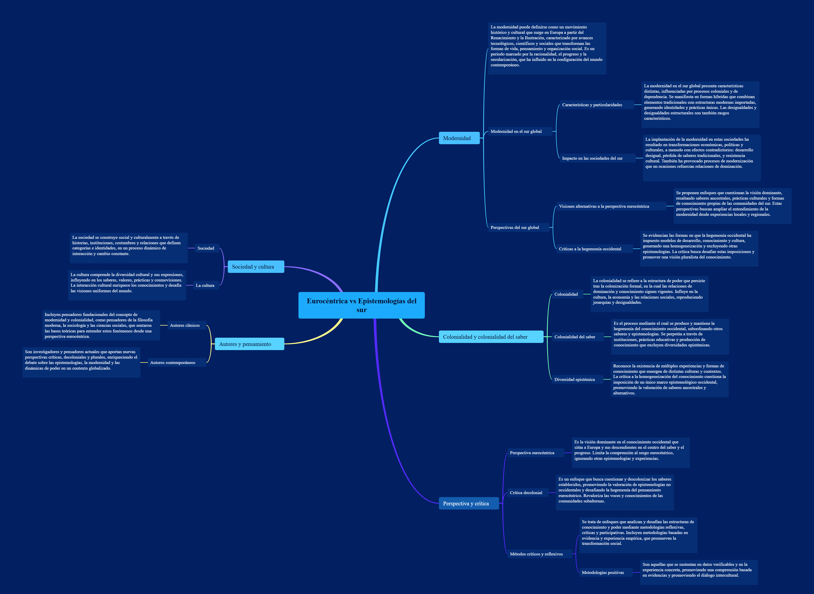

Sociología Eurocentrica vs Sociología desde las epistemologías del sur - Compiló: Mgs: Álvaro Diaz

Actividad
1. Elaborar un glosario con las palabras resaltadas en negrilla en el texto.
Modernidad: Proceso histórico y cultural iniciado en Europa que se caracteriza por el desarrollo de la razón, la ciencia, la industrialización y la idea de progreso, muchas veces imponiendo una visión única del conocimiento y la sociedad.Perspectivas del sur global: Enfoques teóricos y sociales que valoran los conocimientos, experiencias y luchas de los pueblos históricamente marginados por el colonialismo y el eurocentrismo.
Métodos críticos y reflexivos: Estrategias de pensamiento y análisis que cuestionan las estructuras de poder, promueven la autocrítica y buscan comprender la realidad desde distintas miradas.
Colonialidad del saber: Concepto que explica cómo el conocimiento occidental ha dominado e invisibilizado otras formas de saber, manteniendo relaciones de poder coloniales en la educación y la ciencia.
Modernidad en el sur global: Adaptación y reinterpretación de la modernidad en los contextos latinoamericanos, africanos o asiáticos, donde se entrelazan tradiciones locales con influencias occidentales.
Crítica decolonial: Corriente de pensamiento que cuestiona las estructuras coloniales aún presentes en la cultura, la política y el conocimiento, promoviendo una visión más justa y plural del mundo.
Sociedad: Conjunto de personas que comparten una cultura, normas e instituciones, y que interactúan para organizar su vida colectiva.
La cultura: Conjunto de valores, creencias, prácticas y conocimientos que caracterizan a una comunidad o grupo social.
Colonialidad: Herencia del colonialismo que continúa afectando las formas de pensar, de gobernar y de producir conocimiento, incluso después del fin del dominio político colonial.
Diversidad epistémica: Reconocimiento y valoración de las múltiples formas de conocimiento existentes en el mundo, más allá del pensamiento occidental.
Metodologías positivas: Enfoques de investigación basados en la observación, la medición y la objetividad, propios del pensamiento científico occidental moderno.
Diversidad de experiencias y saberes: Reconocimiento de que existen múltiples formas de comprender y explicar el mundo, basadas en diferentes contextos culturales, sociales y geográficos.
Perspectiva eurocéntrica: Visión del mundo que coloca a Europa y su cultura como el centro del conocimiento, la historia y el progreso, marginando otras realidades.
Autores clásicos: Pensadores que sentaron las bases de la filosofía, la ciencia o las humanidades modernas, generalmente desde una perspectiva europea (como Kant, Descartes o Marx).
Autores contemporáneos: Intelectuales actuales que reflexionan sobre los problemas del mundo moderno y proponen nuevas formas de pensar desde el diálogo intercultural y decolonial (como Boaventura de Sousa Santos o Walter Mignolo).
Colonialidad del saber: (Reiterado por su importancia) Forma de dominación que impone el conocimiento europeo como universal, negando la validez de los saberes de los pueblos colonizados o del sur global.
2. Indague en que consiste la colonialidad del saber.
Rta: La colonialidad del saber es un concepto desarrollado por pensadores decoloniales que explica cómo el conocimiento producido desde contextos europeos y coloniales ha ejercido una posición dominante sobre otras formas de conocimiento. Este fenómeno ha llevado a que el saber occidental sea considerado como el único válido y universal, mientras que los saberes de los pueblos indígenas, afrodescendientes y del sur global han sido desvalorizados, marginados o ignorados.
Esta colonialidad implica una relación de poder en la que ciertos conocimientos son privilegiados y otros excluidos, reproduciendo las estructuras de dominación colonial incluso después del fin del colonialismo político.
La crítica a la colonialidad del saber busca reconocer la diversidad epistémica, es decir, la existencia de múltiples formas de producir y comprender el conocimiento, promoviendo un diálogo intercultural que valore los distintos modos de entender y transformar el mundo.
3. Elaborar un mapa mental con las palabras del glosario.
